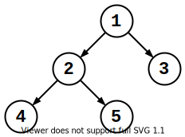

树
 Mar 17, 2021
Mar 17, 2021
TOC
定义 ¶
树有多种等价的定义方式：
- 连通且无环的无向图.
- 有 $n$ 个节点和 $n-1$ 条边的无向图.
- 任意两个顶点间只有一条路径的无向图.
图论中的树看起来更像现实中倒悬的树：

树的节点存在「父子关系」：
- 有连边的两个节点中，上节点为下节点的父节点.节点 $2$ 是节点 $5$ 的父节点；
- 有连边的两个节点中，下节点为上节点的子节点，节点 $5$ 是节点 $2$ 的子节点；
- 没有父节点的节点为根节点，节点 $1$；
- 没有子节点的节点为叶节点，节点 $5,6,3,8,9$.
有根树和无根树 ¶
有根树必须明确根节点，而无根树的任意节点都可以是根节点.下面的左图和右图是同一棵无根树：

子树 ¶
将节点 $i$ 和其父节点断开，分裂出的以 $i$ 为根的新树，称作节点 $i$ 的子树.如下图，红色部分为节点 $3$ 的子树.

层和深度 ¶
定义根节点在第 $1$ 层，子节点层数 $=$ 父节点层数 $+ \ 1$：

树的深度 $=$ 总层数.上图中树的深度为 $4$.树中各个节点的深度为节点所在的层数.
二叉树 ¶
任意节点的子节点数量 $≤2$ 的树是二叉树：

满二叉树 ¶
深度为 $k$ 的二叉树最多有 $2^k-1$ 个节点.节点最多的那棵树是满二叉树：

满二叉树除最后一层外，其它层任意节点都有 $2$ 个子节点.
完全二叉树 ¶
将满二叉树最后一层右边连续的若干节点删除，得到完全二叉树：

满二叉树是一类特殊的二叉树.
森林 ¶
多棵树组成的图为森林：

二叉树的遍历 ¶
对于二叉树，可以使用 DFS 算法 遍历所有节点.二叉树定义了 $3$ 种遍历方式，遍历顺序各不同.

-
访问根节点 $u$；
-
递归遍历 $u$ 的左子树；
-
递归遍历 $u$ 的右子树.
上图的前序遍历顺序为 $1→2→4→5→3$.
void dfs(int u) { // 遍历以 u 为根的树
if(!u) return;
cout << u << ' ';
dfs(l[u]); // l[u]: u 的左子节点
dfs(r[u]); // r[u]: u 的右子节点
}
-
递归遍历 $u$ 的左子树；
-
访问根节点 $u$；
-
递归遍历 $u$ 的右子树.
上图的中序遍历顺序为 $4→2→5→1→3$.
void dfs(int u) {
if(!u) return;
dfs(l[u]);
cout << u << ' ';
dfs(r[u]);
}
-
递归遍历 $u$ 的左子树；
-
递归遍历 $u$ 的右子树；
-
访问根节点 $u$.
上图的后序遍历顺序为 $4→5→2→3→1$.
void dfs(int u) {
if(!u) return;
dfs(l[u]);
dfs(r[u]);
cout << u << ' ';
}
二叉树的恢复 ¶
给定一棵二叉树的前序和中序遍历序列，求后序遍历序列.
前序遍历：$DBACEGF$.
中序遍历：$ABCDEFG$.
阅读程序，得到各个遍历方式的规律：
-
前序遍历：
第一个元素是根节点.
$$\overset{根节点}{ \ \ \ \ \ \ \overset{\su ↓}{D}BA}CEGF \ \ \ \ \ \ $$
-
中序遍历：
根节点左边的都在左子树，右边的都在右子树.
$$\overset{根节点}{\underset{左子树}{\underbrace{ABC}}\overset{\su ↓}{D}\underset{右子树}{\underbrace{EFG}}}$$
-
后序遍历：
最后一个元素是根节点.
$$ \ \ \ \ \ \ ACBF\overset{根节点}{GE\overset{\su ↓}{D} \ \ \ \ \ \ }$$
根据前序遍历可以确定 $D$ 是根节点.于是在中序遍历序列中找到 $D$.
$$ABC\textcolor{red}{D}EFG$$
处于 $D$ 左边的 $ABC$ 在 $D$ 的左子树上；$D$ 右边的 $EFG$ 在右子树上.自此，我们可以大致确定这棵二叉树的形状：

比较整棵树的前序、中序遍历序列，还可以得出左右子树的前序、中序遍历序列：
前序遍历：$\textcolor{red}{D}\textcolor{green}{BAC}\textcolor{blue}{EGF}$.
中序遍历：$\textcolor{green}{ABC}\textcolor{red}{D}\textcolor{blue}{EFG}$.
-
左子树：
-
前序遍历：$BAC$.
-
中序遍历：$ABC$.
-
-
右子树：
-
前序遍历：$EGF$.
-
中序遍历：$EFG$.
-
对左右子树进行相同的操作，不难得出整棵树的结构.

最后再后序遍历依次，输出序列.
#include <bits/stdc++.h>
using namespace std;
char l[255], r[255];
void build(string pre, string mid) { // pre: 前序序列 mid: 中序序列
if(!pre.size()) return;
char root = pre[0]; // 前序遍历序列的第一个是根节点
int p = 0;
while(mid[p] != root) p ++; // 在中序遍历中找到根节点位置
string l_pre = pre.substr(1, p); // 左子树 - 前序
string l_mid = mid.substr(0, p); // 左子树 - 中序
string r_pre = pre.substr(p + 1); // 右子树 - 前序
string r_mid = mid.substr(p + 1); // 右子树 - 中序
if(l_pre.size()) l[root] = l_pre[0];
if(r_pre.size()) r[root] = r_pre[0];
build(l_pre, l_mid); // 递归构建左子树
build(r_pre, r_mid); // 递归构建右子树
}
void dfs(char u) {
if(!u) return;
dfs(l[u]);
dfs(r[u]);
cout << u << ' ';
}
int main() {
build("DBACEGF", "ABCDEFG");
dfs('D'); // D 是根节点
return 0;
}